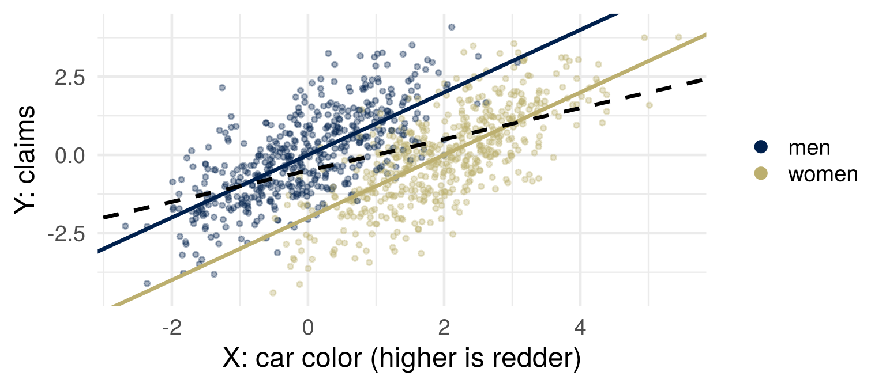
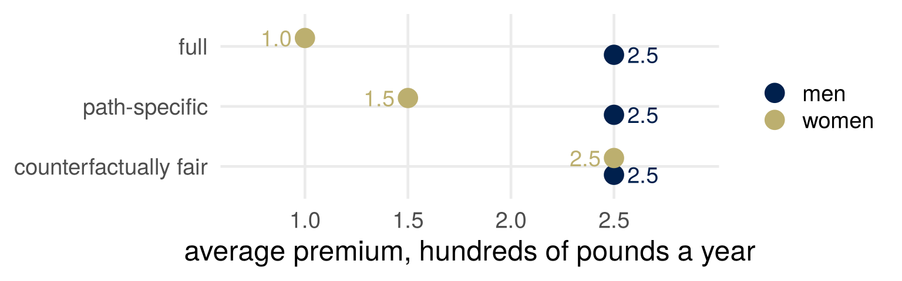
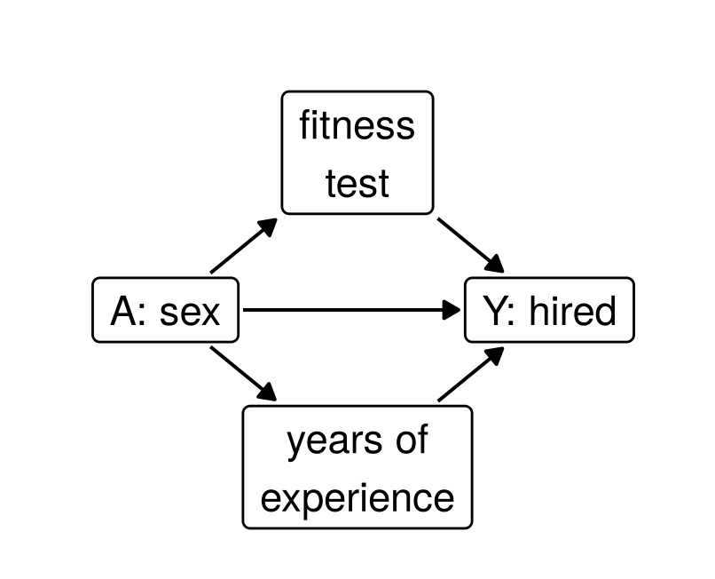

Part 1: The red car
Part 2: Direct and indirect effects
Part 3: Two fair predictors
Part 4: Luck and responsibility
Draw the route you brought as arrows, from the attribute to the outcome. Which arrow is your judgment about?
Court of Justice of the European Union, Test-Achats, 1 March 2011:
“Taking the gender of the insured individual into account as a risk factor in insurance contracts constitutes discrimination”
From 21 December 2012: no sex-based premiums in the EU. Everything else the insurer records can still be used.
Court of Justice of the European Union (2011), Press Release No 12/11, 1 March 2011, on Case C-236/09, Association belge des Consommateurs Test-Achats ASBL and Others v Conseil des ministres, https://curia.europa.eu/site/upload/docs/application/pdf/2011-03/cp110012en.pdf, pages 1–2.
Aggression \(U\) is never observed.
Fairness through unawareness: price on \(X\), never on \(A\).
Kusner, Loftus, Russell and Silva (2017), “Counterfactual Fairness,” Advances in Neural Information Processing Systems 30; arXiv:1703.06856v3, Scenario 1, page 4 (with race as \(A\)). Loftus, Modern Statistics 4 Data Science, section 3.4.1, https://joshualoftus.com/ms4ds/ethical-data-science.html#causal-models (with gender).
The insurer prices on the car alone. Is that price fair to women? Write yes or no, and one reason.
With a test score \(X = Y + 2A + \varepsilon\), which group did the model without \(A\) predict higher?
\[ X = 2A + U, \qquad Y = U + \varepsilon \]
\(A = 1\) for a woman, half the drivers; \(U\) and \(\varepsilon\) are \(N(0, 1)\), independent of each other and of \(A\).
Fit \(Y\) on \(X\) alone. Which group does it charge more, and by how much? Which group claims more?
Women are charged \(\tfrac12\) on average and men \(-\tfrac12\). Both groups claim \(0\).

A woman’s car scores \(X = 2.6\). What would her price have been, had she been a man?
| she, \(A = 1\) | had \(A\) been \(0\) | |
|---|---|---|
| \(U = X - 2A\) | \(0.6\) | \(0.6\) |
| \(X = 2A + U\) | \(2.6\) | \(0.6\) |
| price from \(X\) alone, \(\tfrac12 X - \tfrac12\) | \(0.8\) | \(-0.2\) |
| price from \(X\) and \(A\), \(X - 2A\) | \(0.6\) | \(0.6\) |
Abduction: find \(U\). Action: set \(A\). Prediction: recompute with the same \(U\).
Barocas, Hardt and Narayanan (2023), Fairness and Machine Learning: Limitations and Opportunities, MIT Press, https://fairmlbook.org/pdf/fairmlbook.pdf, chapter 5, Definition 5, page 123.
\(\hat Y(a)\): the prediction for the same person, with \(U\) as abducted, had \(A\) been \(a\).
\(\hat Y\) is counterfactually fair if, given what was observed, \(\hat Y(a)\) and \(\hat Y(a')\) have the same distribution for every \(a'\).
Lemma 1: a function of the non-descendants of \(A\) is counterfactually fair. Here, \(X - 2A = U\).
Kusner, Loftus, Russell and Silva (2017), as above: Definition 5, page 3; Lemma 1, page 5; the quotation, page 4.
Here \(do(A)\) has no effect on \(Y\). In the fit \(X - 2A\), the coefficient on \(A\) is \(-2\).
Which is a statement about intervening, and which about conditioning?
\[ M = \mu_0 + \alpha A + U_M, \qquad Y = \gamma A + \beta M + U_Y \]
\(M\) in thousands of miles a year, \(Y\) in hundreds of pounds a year. \(U_M\) and \(U_Y\) are independent of each other and of \(A\).
Sex affects claims directly and through mileage. For one person, how would you define the part of the effect that does not go through mileage?
\(Y(a, m)\): claims under \(do(A := a, M := m)\). \(\quad M(a)\): mileage under \(do(A := a)\).
Controlled: \(\text{CDE}(m) = E[Y(1, m) - Y(0, m)]\), everyone at mileage \(m\).
Natural: \(Y(1, M(0))\), a woman driving the miles she would have driven as a man.
The reading writes \(Y_{X := 1,\, Z := Z_{X := 0}}\) for \(Y(1, M(0))\), with \(X\) the treatment and \(Z\) the mediator: Barocas, Hardt and Narayanan (2023), pages 127–128.
\[ \begin{aligned} \text{TE} &= E[Y(1, M(1)) - Y(0, M(0))] \\ &= \underbrace{E[Y(1, M(0)) - Y(0, M(0))]}_{\text{NDE}} \\ &\quad + \underbrace{E[Y(1, M(1)) - Y(1, M(0))]}_{\text{NIE}} \end{aligned} \]
\(\text{TE} = \text{NDE} + \text{NIE}\) in any model, when the NIE holds \(A\) at the level the NDE moves it to.
\[ M(a) = \mu_0 + \alpha a + U_M, \qquad Y(a, m) = \gamma a + \beta m + U_Y \]
What are the CDE, the NDE, the NIE and the TE?
\[ \text{CDE}(m) = \text{NDE} = \gamma, \qquad \text{NIE} = \alpha\beta, \qquad \text{TE} = \gamma + \alpha\beta \]
With no interaction, the indirect effect is the product of the coefficients along the path.
\(Y(1, M(0))\) is nobody’s observed outcome. The model supplies it.
Equal mileage in the data is not mileage held fixed. If driving for work, \(U\), adds both miles and claims, \(M\) is a collider on \(A \to M \leftarrow U \to Y\).
The insurer’s best prediction before 2012: \(\;\hat Y_{\text{full}} = \gamma A + \beta M\).
Write down a premium that removes the effect of sex along every path. Then one that removes it along \(A \to Y\) only, and keeps the path through mileage.
Abduction: \(U_M = M - \mu_0 - \alpha A\). \(\;\) Action: \(A := 0\). \(\;\) Prediction: \(M(0) = M - \alpha A\).
\[ \hat Y_{\text{CF}} = \beta\,(M - \alpha A) = \beta\,(\mu_0 + U_M) \]
A function of \(U_M\) alone, so counterfactually fair. It needs \(A\) as an input.
“a decision is fair toward an individual if it coincides with the one that would have been taken in a counterfactual world in which the sensitive attribute along the unfair pathways were different”
Set \(A := 0\) on \(A \to Y\) only, and keep the observed mileage:
\[ \hat Y_{\text{PS}} = \beta M \]
Chiappa (2019), “Path-Specific Counterfactual Fairness,” Proceedings of the AAAI Conference on Artificial Intelligence 33(01), 7801–7808, doi:10.1609/aaai.v33i01.33017801, page 7801.

\(\hat Y_{\text{full}} - \hat Y_{\text{PS}} = \gamma A \qquad \hat Y_{\text{PS}} - \hat Y_{\text{CF}} = \alpha\beta A\)
The two fair premiums differ by the contribution of the path someone judged fair.
Which of the three would you want your own premium computed from? Would you choose the same one if you did not know which group you were in?
Kusner et al., on Berkeley admissions: “the higher rejection among female than male applicants is acceptable, if the mechanism A → X is interpreted as a choice which is under the control of the applicant.”
The reading, on the same case: “This, however, is a substantive judgment that may not be a fact.”
Nabi and Shpitser: “The specific paths which correspond to discrimination are a domain specific issue.”
Kusner, Loftus, Russell and Silva (2017), supplementary material, page 15 of arXiv:1703.06856v3. Barocas, Hardt and Narayanan (2023), chapter 5, page 119. Nabi and Shpitser (2018), “Fair Inference on Outcomes,” Proceedings of the AAAI Conference on Artificial Intelligence 32(1), doi:10.1609/aaai.v32i1.11553, page 4 of arXiv:1705.10378v4.
Refit on mileage alone: the gap becomes \(\text{NIE} + R^2\,\text{NDE}\), where \(R^2\) is the share of \(\operatorname{Var}(M)\) explained by \(A\).
With \(\delta AM\) in \(Y\), and a subscript for the level held fixed: \(\;\text{NDE}_0 + \text{NIE}_1 = \text{TE}\), but \(\text{NDE}_0 + \text{NIE}_0 = \text{TE} - \alpha\delta\).
“The control principle says that we should only judge people to the extent that the factors we judge them on are under their control.”
“we really might want insurers to ignore the additional costs that they are likely to face in setting the price of a policy for someone with an expensive pre-existing condition outside the person’s control”
Loftus, Modern Statistics 4 Data Science, section 3.4.2, https://joshualoftus.com/ms4ds/ethical-data-science.html#moral-luck. Barocas, Hardt and Narayanan (2023), chapter 4, page 85.
Brute luck: risks a person did not choose. Option luck: how a chosen gamble turns out.
Control “cannot be expressed in the statistical language of conditional probabilities and expectations.”
Lippert-Rasmussen, “Justice and Bad Luck,” The Stanford Encyclopedia of Philosophy, first published 20 June 2005, substantive revision 2 February 2023, https://plato.stanford.edu/entries/justice-bad-luck/, section 7. Barocas, Hardt and Narayanan (2023), chapter 4, page 92.
Is the path \(A \to M \to Y\) fair, when mileage was itself shaped by sex? One of you argues yes, the other no; then swap.
“But there may be a deontological argument in favor of functional independence, including empirical evidence that people generally believe a process with functional independence is more fair.”
In the red car world, the price that never looks at sex is not counterfactually fair. Does a deontologist have to prefer it anyway?
Loftus, Modern Statistics 4 Data Science, section 3.4.1, as above.
\[ Y = \gamma_1 A_1 + \gamma_2 A_2 + \delta A_1 A_2 + \dots \]
The effect of \(A_1\) is \(\gamma_1\) when \(A_2 = 0\) and \(\gamma_1 + \delta\) when \(A_2 = 1\). Leaving out \(\delta\) assumes the two are equal.
Yang, Loftus and Stoyanovich (2021), “Causal Intersectionality and Fair Ranking,” 2nd Symposium on Foundations of Responsible Computing (FORC 2021), LIPIcs 192, 7:1–7:20, doi:10.4230/LIPIcs.FORC.2021.7.

The direct path is the hiring panel. Career breaks reduce experience.
The next reading is about decisions made from predictions: what a wrong prediction costs, and how far life outcomes can be predicted at all.
Bring one prediction an institution acted on: what was predicted, what was decided, and what a wrong prediction costs and who bears it.